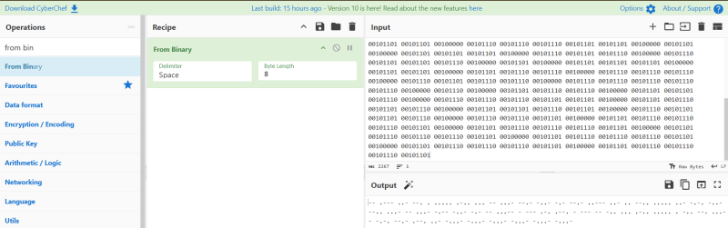
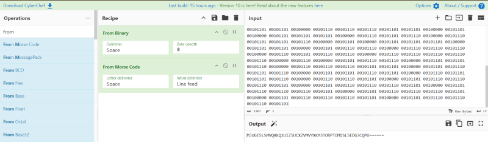
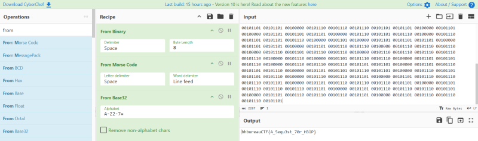

If this cyphertext has been found, we need you... Black hat bureau has attacked our most secure infrastructures, only skilled professionals on our team are able to get into our systems and help us remediate it. Decode this message to get to us! There was a text file attached in the challenge description for the 'agent' to download.
Upon downloading and opening the .txt file, I noticed that the entirety of the file's content was dozens of lines of Binary. 00101101 00101101 00100000 00101110 00101101 00101101 00101101 00100000 00101110 00101110 00101101 00100000 00101101 00101101 00101110 00100000 00101110 00100000 00101110 00101110 00101110 00101110 00101110 00100000 00101110 00101101 00101110 00101110 00100000 00101110 00101110 00101110 00100000 00101101 00101101 00100000 00101110 00101110 00101110 00101101 00100000 00101101 00101101 00101110 00101101 00100000 00101101 00101110 00101110 00101101 00100000 00101101 00101110 00101101 00100000 00101101 00101101 00101110 00101101 00100000 00101110 00101110 00101101 00101101 00101101 00100000 00101110 00101110 00101101 00100000 00101110 00101110 00100000 00101101 00101101 00101110 00101110 00100000 00101110 00101110 00101110 00101110 00101110 00100000 00101110 00101110 00101101 00100000 00101101 00101110 00101101 00101110 00100000 00101101 00101110 00101110 00101101 00100000 00101101 00101101 00101110 00101110 00100000 00101110 00101110 00101110 00101101 00100000 00101101 00101101 00100000 00101110 00101110 00101110 00101101 00100000 00101101 00101110 00101101 00101101 00100000 00101101 00101110 00101110 00101101 00100000 00101101 00101110 00101101 00100000 00101101 00101101 00100000 00101110 00101110 00101110 00101101 00101101 00100000 00101101 00100000 00101101 00101101 00101101 00100000 00101110 00101101 00101110 00100000 00101110 00101101 00101101 00101110 00100000 00101101 00100000 00101101 00101101 00101101 00100000 00101101 00101101 00100000 00101101 00101110 00101110 00100000 00101110 00101110 00101110 00100000 00101110 00101101 00101110 00101110 00100000 00101110 00101110 00101110 00101110 00101110 00100000 00101110 00100000 00101101 00101110 00101110 00100000 00101101 00101101 00101110 00100000 00101110 00101110 00101110 00101101 00101101 00100000 00101101 00101110 00101101 00101110 00100000 00101101 00101101 00101110 00101101 00100000 00101110 00101101 00101101 00101110 00100000 00101110 00101110 00101101 00100000 00101101 00101110 00101110 00101110 00101101 00100000 00101101 00101110 00101110 00101110 00101101 00100000 00101101 00101110 00101110 00101110 00101101 00100000 00101101 00101110 00101110 00101110 00101101 00100000 00101101 00101110 00101110 00101110 00101101 00100000 00101101 00101110 00101110 00101110 00101101 I immediately opened CyberChef and copied the Binary into the input field, adding the "from Binary" function to the decryption 'recipe'. After the contents were converted from Binary the output changed and presented a string of Morse Code.
I then added the "from Morse Code" function to the 'recipe' and hit bake again. The contents of the Output field changed once again and presented a string of Base32.
At this point I knew the drill and followed suit. I added the "from Base32" to the recipe and hit bake. The contents then changed for the final time and presented the flag in 'leet speak'.
The Final Flag = bhbureauCTF{A_5equ3st_70r_H3lP}